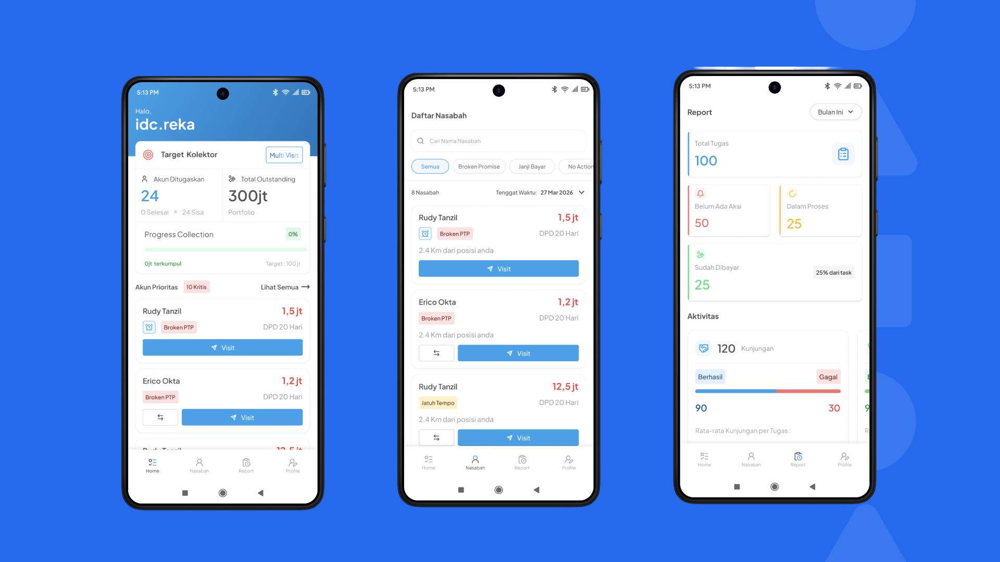

Problem Statement
How might we design a mobile application that empowers field collectors to track their daily targets, seamlessly manage their assigned pipeline, and prioritize high-risk accounts without cognitive overload?
Key Pain Points
- Lack of visibility on daily targets and overall performance.
- Unclear Prioritization among dozens of assigned accounts.
- High mental fatigue from manually tracking assigned pipelines and daily priorities.
Goals & Success Metrics
Business Goals
- Increase overall debt recovery rate (Collection Rate).
- Increase successful daily visits per collector.
- Improve collector retention through transparent performance tracking.
Users Goals
- Instantly know daily targets and progress.
- Quickly identify the most critical accounts to handle today.
- Easily filter and search through assigned debtors.
UX Success Metrics
- Daily active usage of the performance dashboard.
- Time taken to identify and select the first prioritized target of the day.
- Qualitative feedback on prioritization clarity.
UX Strategy : Data-Driven Field Operations
The app should act as a strategic command center, not just a digital ledger.
Strategy Approach Position the app as:
- A transparent performance tracker.
- A centralized, filterable information hub.
- A prioritization assistant.
Solution Developing an integrated ecosystem starting from a unified Home Dashboard for progress tracking and a streamlined Debtor List for pipeline management to execute the day's tasks efficiently.
Core Concept & Workflow
1. The Command Center (Home & Report Dashboard) Collectors start their day here. The Home screen features a "Target Kolektor" widget showing live progress (Collection Progress, Total Outstanding) against daily quotas. A dedicated "Report" tab visualizes historical performance—such as Visit Success Rates (Berhasil vs Gagal) and Promise To Pay outcomes (Promise Kept vs Broken)—keeping collectors motivated and aligned with their KPIs.
2. Actionable Pipeline (Daftar Nasabah) A comprehensive roster of all assigned debtors. We introduced quick-filter chips (e.g., Broken Promise, Janji Bayar) and a search bar so collectors can slice through their pipeline instantly. Each debtor card surfaces critical decision-making data upfront: DPD (Days Past Due), total debt, and priority status.
Application Design

Design Decision
- Data Visualization: Clean progress bars and color-coded status cards (Red for Broken PTP/Action Needed, Green for Success) to make complex data instantly readable outdoors.
- Progressive Disclosure: The Home screen only shows the "10 Kritis" (Top 10 Critical) accounts to prevent overwhelming the user upon login, pushing the rest to the Nasabah tab.
- Action-Oriented UI: Prominent, full-width primary CTA buttons ("Visit") on every debtor card reduce interaction cost.
- Tabbed Navigation: Separating Home, Nasabah, Report, and Profile keeps the architecture flat and easily accessible with one hand.
Impact & Result
User Impact
- Increased motivation through transparent, real-time performance tracking.
- Faster onboarding for understanding daily priorities and navigating the application.
- Reduced cognitive load when deciding which debtor to approach first.
Business Impact (Projected)
- Higher collection yield on high-priority cases (Broken PTP) due to immediate visibility on the Home screen.
- More standardized and trackable field operations for regional managers.
Learning & Reflection
- Transparency drives performance: Giving field workers direct visibility into their success metrics (Report tab) fosters a sense of ownership over their targets.
- Field context requires high contrast: Outdoor usage under direct sunlight demands clear visual hierarchies, explicit color coding (Red/Green), and large touch targets.
- Less is more on the dashboard: Restricting the Home screen to only show top critical accounts effectively prevents analysis paralysis for the collectors.